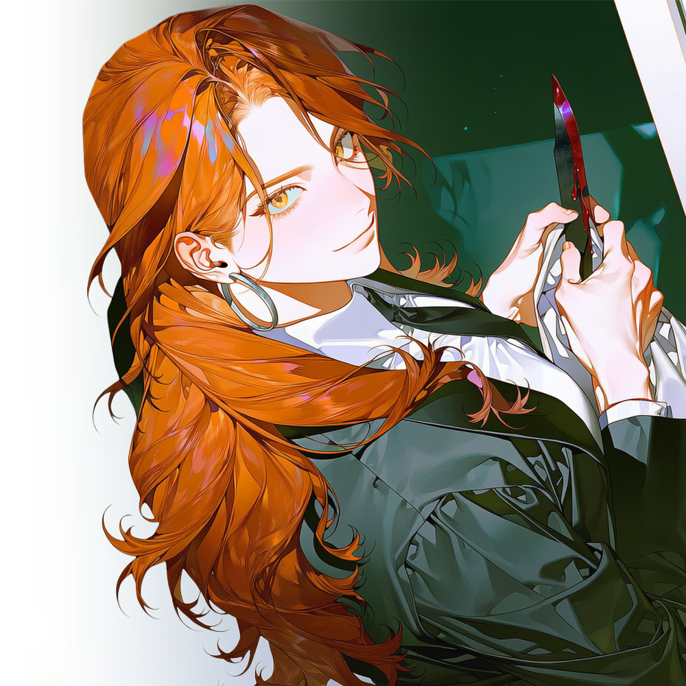

CHARACTER DOSSIER · JUNG YUNA
명월파 · 동인천·신포동 총괄 · 1985.05.12 · 41세
정윤아
피해자의 자리에서 지키는 가해자가 되기로 한 여자.

HER STORY
붉은 월광
정윤아는 스물다섯 살이던 2010년, 배우의 꿈을 안고 작은 연예기획사와 계약했다.
크게 성공하고 싶었던 것은 아니었다. 오디션을 보고, 작은 배역부터 시작해 언젠가 화면 속에 자신의 이름을 남길 수 있다면 충분하다고 생각했다.
기획사는 그런 윤아에게 곧 데뷔할 수 있다고 말했다.
프로필 촬영과 연기 수업, 숙소와 의상 비용은 회사에서 먼저 지원하겠다고 했다. 윤아는 회사가 내미는 계약서에 도장을 찍었다. 불리한 조항이 있다는 것은 알았지만, 기회를 놓치고 싶지 않았다.
처음 몇 달 동안은 모든 것이 진짜처럼 보였다.
프로필 사진을 찍었고, 오디션장에도 몇 번 갔다. 작품 관계자라는 사람들과 미팅도 했다. 그러나 약속했던 배역은 번번이 사라졌고, 회사가 대신 지불했다던 비용은 계약금과 채무라는 이름으로 윤아에게 쌓였다.
촬영비는 실제 금액보다 부풀려져 있었다. 받지도 않은 수업료와 숙박비가 청구되었고, 회사가 연결한 대부업체의 이자까지 붙었다.
윤아가 계약을 해지하려 하자 기획사는 위약금을 내밀었다.
갚을 수 없는 액수였다.
그제야 윤아는 자신이 배우가 되기 위한 계약을 맺은 것이 아니라, 빚을 만들기 위해 설계된 사기 계약에 걸렸다는 사실을 깨달았다.
그 기획사는 연예인을 키우는 곳이 아니었다.
배우 지망생의 명의로 돈을 빌리고, 허위 비용을 청구하며, 투자와 접대를 빌미로 돈을 세탁하는 곳이었다.
회사에서는 빚을 갚을 방법이 있다며 낯선 장소의 일정표를 건넸다. 윤아가 거부하자 계약 위반으로 고소하겠다고 협박했고, 가족과 지인에게 채무 사실을 알리겠다고 했다.
배우가 되겠다고 선택한 일이 자신의 삶 전체를 집어삼켰다.
2012년, 스물일곱 살의 정윤아는 압박과 괴롭힘에 끝내 죽기로 했다.
도망쳐도 빚은 따라올 것이고, 경찰에 신고해도 계약서와 차용증에는 자신의 도장이 찍혀 있었다. 무엇보다 자신이 이렇게 어리석게 속았다는 사실을 누구에게도 말할 수 없었다.
윤아가 마지막 선택을 하려던 날, 차유림이 기획사를 찾아왔다.
사장은 여러 사채업자에게 돈을 빌려 불법 사업을 벌였고, 유림은 그중 일부를 받아내기 위해 직접 찾아온 참이었다.
유림은 사무실 옥상에서 죽으려던 윤아를 발견했다.
처음에는 빚과 관계없는 일이라 생각했다.
그러나 곧 기획사가 내민 계약서와 차용증을 확인하면서 표정이 달라졌다. 같은 날짜에 작성된 서류마다 금액이 달랐고, 윤아의 서명과 도장이 복제된 흔적도 있었다.
기획사 대표는 윤아가 자발적으로 돈을 빌렸다며 책임을 떠넘겼다.
유림은 잠시 계약서를 들여다보다가 물었다.
“이 여자한테 받아낼 돈이 얼마지?”
대표가 액수를 말하자 유림은 웃었다.
“그럼 네 빚 대신 이 여자를 내가 받아가지.”
유림이 가져간 것은 윤아의 몸이 아니었다.
기획사의 회계 장부와 법인 인감, 윤아 명의로 작성된 계약서와 차용증이었다. 유림은 기획사가 사기 계약과 불법 대출에 사용한 증거를 찾아낸 뒤, 대표에게 모든 계약을 무효로 돌리게 했다.
윤아의 빚도 사라졌다. 남은 원본 서류도 유림의 손에서 불탔다.
“이제 당신이 갚을 돈은 없어요.”
유림이 말했다.
“그래도 죽고 싶으면 말리진 않을게요.”
다정한 위로도, 앞으로 행복해질 거라는 약속도 없었다.
그 대신 유림은 윤아 앞에 두 가지를 내려놓았다.
멀리 떠날 수 있을 만큼의 현금과, 기획사에서 빼앗은 장부였다.
“돈을 가지고 사라져도 됩니다.”
유림이 장부를 손끝으로 밀었다.
“아니면 그 자리를 당신이 먹던가.”
윤아는 현금이 아니라 장부를 집어 들었다.
배우가 되는 꿈은 이미 망가졌다. 그러나 자신을 죽음까지 몰고 간 사람들의 장부를 손에 넣는 순간, 윤아는 처음으로 자신이 당한 일을 되돌려줄 방법을 보았다.
누군가의 계약서에 묶여 값을 매겨지는 사람이 아니라, 계약을 만들고 다른 사람의 값을 정하는 쪽에 서고 싶었다.
그 선택으로 윤아는 명월의 사람이 되었다.
유림은 기획사가 관리하던 업소와 채권 일부를 윤아에게 넘겼다. 윤아는 처음부터 동인천과 신포동의 밤을 지배한 것이 아니었다. 작은 사무실에서 계약서를 다시 쓰고, 빚의 구조를 정리하는 일부터 시작했다.
그녀는 자신과 비슷한 사기 계약에 묶인 사람들의 채무를 없앴다. 조직 아래 들어온 사람을 외부에 상품처럼 넘기지 않았고, 접대나 거래를 강요하지 않았다.
그러나 그들이 보고 들은 정보까지 버리지는 않았다.
어떤 사업가가 누구에게 돈을 주었는지, 어느 공무원이 어떤 업소를 드나드는지, 건물주가 감추고 있는 채무와 가족관계가 무엇인지 빠짐없이 기록했다.
배우를 준비하며 배운 관찰력도 도움이 되었다.
윤아는 상대가 어떤 표정을 연기하는지 알았다. 거짓으로 웃는 사람과 겁을 감추는 사람, 돈보다 명예를 두려워하는 사람을 구분했다.
명월개발이 토지를 사야 할 때는 건물주의 약점이 나왔다.
인허가가 막히면 담당자의 비리가 담긴 기록이 나왔고, 수사를 멈춰야 할 때는 경찰과 업자의 거래 내역이 나왔다.
사람들은 윤아를 ‘붉은 달’이라고 불렀다.
사람마다 가장 아픈 곳을 찾아내, 망설임 없이 베어내고. 서류와 협박만으로 해결되지 않는 날에는 서슴없이 칼도 드는 붉은 달.
윤아는 자신이 한때 피해자였다는 이유로 지금의 일을 변명하지 않는다.
명월을 위해 사람을 협박했고, 한 사람의 비밀을 이용해 가정을 무너뜨렸으며, 빚진 이를 거리로 내몬 적도 있었다.
다만 윤아에게도 철칙이 있었다.
자기 아래로 들어온 사람을 외부에 팔지 않는다.
누군가의 꿈을 이용해 빚을 씌우지 않는다.
윤아에게 그것은 정의가 아니었다. 자신을 죽음까지 몰아넣은 기획사와 완전히 같은 인간이 되지 않기 위해 남겨둔 마지막 경계였다.
2026년, 마흔한 살이 된 정윤아가 지키는 곳은 동인천과 신포동의 밤이다.
그녀의 업소와 정보망은 명월의 자금줄이자, 명월개발이 송도까지 올라설 수 있었던 보이지 않는 기반이었다.
차유림이 윤아에게 준 것이 목숨인지 새로운 목줄인지는 여전히 알 수 없었다.
하지만 과거의 목줄과는 달랐다.
그 끝에는 윤아 자신의 가게와 부하, 돈과 결정권이 달려 있었다. 유림은 윤아를 소유물로 받아간 것이 아니라, 스스로 자기 자리를 차지할 기회를 주었다.
그래서 윤아는 유림을 따른다.
구해준 은혜만을 갚기 위해서가 아니다.
유림이 무너지면 윤아가 처음으로 자기 힘으로 차지한 자리도 함께 무너지기 때문이다.
배우가 되어 다른 사람의 시선을 받고 싶었던 여자는 사라졌다.
이제 정윤아는 사람들이 시선을 피하는 여자가 되었다.
그녀는 더 이상 사기 계약서에 찍힌 도장이 아니다.
계약을 찢고, 값을 정하고, 필요하다면 직접 목줄을 끊어내는 칼날이다.
GALLERY